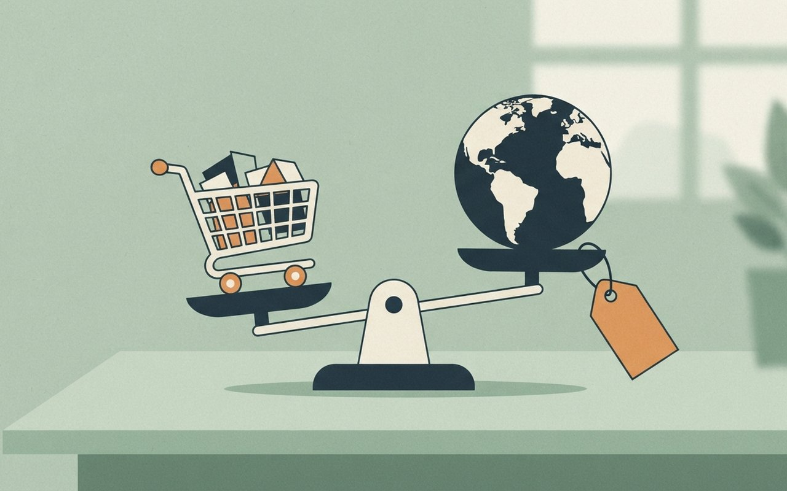

🎧 낭독 원고 보기
11월 7일 토요일, 데일리 브리프입니다. 오늘은 여섯 가지 소식을 전해 드립니다.
코스피가 어제도 6.02퍼센트 떨어져 5,059.69로 마감했습니다. 이틀 동안 10.98퍼센트 빠진 셈입니다. 코스닥도 5.03퍼센트 내렸고, 원달러 환율은 1,356원대로 전날보다 14원 넘게 올랐습니다. 전날 코스피도 5.28퍼센트 떨어졌었습니다. 오전에는 8퍼센트 넘게 빠지며 서킷브레이커가 발동됐고 이어 매도 사이드카도 나왔습니다. 외국인은 어제 2조 7천억 원 넘게 팔았고, 이틀 합계는 6조 원이 넘습니다. 한 매체는 미국 기술주 급락과 데이터센터 규제 우려를 원인으로 짚었지만, 반도체 주문이 실제로 줄었다는 확인은 아직 없다고 전했습니다.
미국 10월 고용보고서는 일자리가 16만5천 명 늘어 시장 예상을 크게 웃돌았습니다. 실업률은 4.2퍼센트에서 4.1퍼센트로 내렸습니다. 9월 증가 폭도 6만 명으로 높아졌습니다. 이에 따라 다음 달 연준의 금리 인상 확률은 전날 66퍼센트에서 76퍼센트 이상으로 올랐습니다. 다만 예상치는 매체마다 달라 정확한 수치는 확인이 필요합니다.
트럼프 대통령이 중간선거 참패 사흘 만에 수지 와일스 비서실장을 교체한다고 발표했습니다. 후임은 스티븐 밀러 부비서실장으로, 9일 월요일부터 맡습니다. 와일스 실장은 트럼프 대통령의 정치조직으로 옮깁니다. 선거 패배 뒤 첫 인사 조치입니다. 뉴시스 보도입니다.
공정거래위원회가 독점규제법 시행령 개정안을 입법예고했습니다. 시장지배적 사업자가 정당한 이유 없이 다른 시장의 같거나 비슷한 상품보다 현저히 비싸게 가격을 매기는 행위를 막는 내용입니다. 예를 들어 해외에서 1만 원인 구독이 국내에서 2만 원이면 남용에 해당할 수 있다는 설명입니다. 공정위 관계자는 특정 기업을 겨냥한 것은 아니라고 했습니다. 의견 수렴은 다음 달 16일까지입니다. 한국경제 보도입니다.
미국 재무장관과 무역대표부 대표가 중국 부총리와 통화하며 2025년 부산 무역합의를 즉각 이행하라고 요구했다고 파이낸셜타임스가 전했습니다. 희토류 수출 이행이 쟁점이고, 중국은 불이행을 부인합니다. 휴전 만료일은 2027년 1월 10일입니다. 뉴시스 보도입니다.
중대범죄수사청과 경찰이 12·3 계엄 내란 사건을 다시 수사할 특별수사본부 구성에 들어갔습니다. 두 특검이 이미 180일씩 수사를 마친 뒤여서 성과와 재판 혼선 우려도 나옵니다. 설치 장소와 인력 구성은 협의 단계입니다. 와이티엔 보도입니다.
끝으로 오늘 서울 날씨입니다. 아침 최저 영하 1도로 올가을 처음 영하권이고, 낮 최고는 9도입니다. 오전 체감온도는 영하 4도까지 내려가니 따뜻하게 입으세요. 오늘 서울 비 소식은 기사에 없고, 내일 일요일에 수도권에 5밀리미터 안팎의 비가 예보됐습니다.
이상으로 오늘의 데일리 브리프를 마칩니다. 자세한 내용과 출처는 카드에서 확인하세요.
暴
증시 · 코스피 6일 마감
코스피 6일 -6.02% 5,059.69 마감 — 이틀 새 -10.98%, 서킷브레이커·사이드카 발동
코스피는 6일 5,059.69에 마감해 324.11포인트(-6.02%) 떨어졌다. 전날 -5.28%에 이어 이틀간 624.11포인트(-10.98%) 빠졌다(두 날 하락폭·하락률로 계산한 값). 코스닥은 644.27로 34.14포인트(-5.03%) 내렸다(뉴스핌).
디지털데일리에 따르면 오전 9시 3분 8% 넘게 하락해 1단계 서킷브레이커로 20분간 거래가 멈췄고, 9시 34분 코스피 매도 사이드카가 발동됐다. 외국인은 6일 2조 7,692억 원을 순매도해 이틀 합계 6조 1,620억 원이다.
- 지수코스피 5,059.69(-324.11p, -6.02%) · 코스닥 644.27(-34.14p, -5.03%)(뉴스핌)
- 이틀 누적-624.11p(-10.98%)는 6일 하락폭과 5일 -5.28%로 계산한 값(기사에 직접 없음)
- 환율원/달러 1,356.6원(15:30 기준, 전일 종가보다 +14.5원)(뉴스핌)
- 수급외국인 6일 순매도 2조 7,692억 원 · 5일 3조 3,928억 원 · 합계 6조 1,620억 원(디지털데일리)
- 장중09:03 서킷브레이커(20분 정지) · 09:34 코스피 매도 사이드카(디지털데일리)
- 원인 해석미 기술주 매도 · 중간선거 뒤 AI 데이터센터 규제 우려 · 필라델피아반도체지수 5일(미국) -12.25%(디지털데일리) · 반도체 주문이 실제 줄었다는 확인은 아직 없음
- 확인 한계수급·장중 시각·5일 -5.28%는 디지털데일리 단일, 누적은 계산값 · 종목별 등락률은 확인하지 못함 ⚠ 변동 가능
Marketing View · 마케터의 시선
이틀 연속 5%대 낙폭이라 "얼마나 빠졌나"가 가장 먼저 궁금해지는 상황이다. 누적 -10.98% 한 줄이 개별 일간 수치보다 상황을 빨리 전한다. 이 카드는 투자 권유가 아니다.
뉴스핌 — 지수·환율 디지털데일리 — 수급·서킷브레이커
뉴스핌(11/6 16:04)·디지털데일리(11/6 15:58) · 5,059.69·-324.11p·-6.02%는 두 기사 일치 · 이틀 누적은 계산값 (확인 2026-11-07)
코스피 이틀 새
10.98% 급락
6일에도 6.02% 떨어져 5,059.69로 마감했어요. 전날 -5.28%에 이어 오전엔 서킷브레이커와 매도 사이드카까지 발동됐어요.
5,059.69|6일 코스피 마감
A tall glowing bar chart column of a stock screen collapsing downward in a dark blue trading room, flat illustration, no text, no logos
雇
경제 · 미국 10월 고용
미 10월 고용 16만5천 명 증가 깜짝 호조 — 12월 금리 인상 확률 66%→76%
뉴시스에 따르면 미국 10월 비농업 고용은 16만5,000명 늘어 예상(5만 9,000명)을 크게 웃돌았고, 실업률은 4.2%에서 4.1%로 내렸다. 한국경제는 지난해 3월 이후 최대 증가라고 전했다.
CME 페드워치 기준 12월 9일 FOMC에서 0.25%p 인상 확률은 전날 66%에서 76% 이상으로 올랐다. 연준은 9월에 0.25%p 올린 뒤 10월 동결했고 기준금리는 3.75~4.00%다. 미 10년물 국채금리는 4.868%다.
- 고용10월 비농업 +16만 5,000명(뉴시스·한국경제 일치) · 실업률 4.1%(전월 4.2%)(뉴시스)
- 수정9월 2만 9,000→6만 명 · 8월 18만 6,000명(5만 3,000명 상향) · 두 달 합계 8만 4,000명 증가(뉴시스)
- 금리12월 9일 FOMC 0.25%p 인상 확률 66%→76% 이상 · 기준금리 3.75~4.00%(뉴시스)
- 국채금리10년물 4.868% · 2년물 4.524% · 30년물 5.275%(뉴시스)
- 확인 한계시장 예상치가 뉴시스 5만 9,000명·한국경제(다우존스) 6만 5,000명으로 다름 · 76%는 뉴시스 단일 ⚠ 변동 가능
Marketing View · 마케터의 시선
"호조"가 증시에는 금리 인상 우려라는 반대 해석으로 이어질 수 있다. 같은 숫자가 보는 시장에 따라 다른 뜻이 되므로 예상치 기준을 함께 적어야 오해가 없다. 이 카드는 투자 권유가 아니다.
뉴시스 — 고용·금리 확률 한국경제 — 지난해 3월 이후 최대
뉴시스(11/7 00:36, 05:22 수정)·한국경제(11/6 23:28) · 16만 5,000명은 두 매체 일치 (확인 2026-11-07)
미 10월 고용
16만5천 명 증가
시장 예상을 크게 웃돌았고 실업률은 4.2%에서 4.1%로 내렸어요. 그래서 12월 금리 인상 확률이 66%에서 76% 이상으로 올랐어요.
66%→76%|12월 금리 인상 확률
替
국제 · 백악관 인사
트럼프, 선거 참패 사흘 만에 비서실장 교체 — 후임 스티븐 밀러, 9일부터
뉴시스에 따르면 트럼프 대통령은 6일(현지) 수지 와일스 비서실장을 교체한다고 발표했다. 후임은 스티븐 밀러 부비서실장이고 11월 9일(월)부터 비서실장을 맡는다.
와일스는 트럼프의 정치조직으로 옮긴다. 중간선거 패배 뒤 첫 인사 조치다. 기사는 헤그세스 국방장관 경질설도 제기돼 있다고 전했고, 이번 인사를 "국정 기조를 바꾸지 않겠다는 뜻"으로 해석했다.
- 발표6일(현지) 비서실장 교체(뉴시스)
- 인사와일스 → 트럼프 정치조직 · 후임 밀러 부비서실장, 11월 9일부터
- 맥락중간선거 패배 뒤 첫 인사 조치 · 헤그세스 국방장관 경질설 제기(기사 언급)
- 확인 한계뉴시스 단일 보도 · 다른 매체 교차 확인 못함 · "기조 유지" 해석은 기사의 해석 ⚠ 변동 가능
Context · 맥락 읽기
인사 발표와 그 의미 해석은 다른 층위다. "기조 유지"는 보도의 해석이므로 확정된 사실로 읽지 않는 편이 안전하다.
뉴시스 — 비서실장 교체
뉴시스(11/7 04:35, 04:54 수정) · 단일 매체 (확인 2026-11-07)
트럼프, 비서실장 교체
후임 스티븐 밀러
중간선거 참패 사흘 만에 수지 와일스 비서실장을 바꾼다고 발표했어요. 후임인 스티븐 밀러 부비서실장이 9일 월요일부터 맡아요. 와일스는 정치조직으로 옮겨요.
11월 9일(월)
선거 패배 뒤 첫 인사 / 뉴시스 단일 보도
價
소비 · 독점규제법 시행령
공정위, 해외보다 현저히 비싸면 제재 추진 — 독점규제법 시행령 개정안 입법예고
한국경제에 따르면 공정위는 시장지배적 사업자가 정당한 이유 없이 다른 시장의 동종·유사 상품보다 가격을 현저히 높게 책정하는 행위를 막는 시행령 개정안을 내놨다. 의견수렴은 다음 달 16일까지다.
기사는 해외 1만 원인 구독이 국내 2만 원이면 남용에 해당할 수 있다는 예를 들었다. 유튜브 프리미엄이 해당할 수 있다는 관측도 전했는데, 한국엔 가족요금제가 없고 개인요금 14,900원이 6명이면 월 8만 9,400원(약 2.4배)이라는 비교다. 공정위 관계자는 특정 기업을 겨냥한 것이 아니라고 했고, 기사는 이것이 곧 제재 대상이라는 뜻은 아니며 시장지배적 사업자인지 먼저 판단해야 한다고 덧붙였다.
- 내용동종·유사 상품의 다른 시장 가격보다 정당한 이유 없이 현저히 높게 책정하는 행위 제한(한국경제)
- 일정입법예고 · 의견수렴 다음 달(12월) 16일까지
- 예시해외 1만 원 구독이 국내 2만 원이면 남용 가능
- 비교 관측영국 가족요금제 19.99파운드(약 3만 6,400원) · 미국 26.99달러(약 3만 6,600원) · 한국 개인요금 14,900원×6명=8만 9,400원
- 확인 한계한국경제 단일 · 유튜브 해당 여부는 기사 속 관측(공정위는 특정 기업 겨냥 아니라고 함) · 과징금 액수는 기사에 없음 ⚠ 변동 가능
Marketing View · 마케터의 시선
"해외 1만 원, 국내 2만 원"처럼 가격 차이를 한 줄로 보여 주는 예시가 법 개정 소식을 생활 뉴스로 바꾼다. 다만 특정 서비스가 해당된다는 것은 관측일 뿐 확정이 아니다.
한국경제 — 공정위 시행령 개정안
한국경제(11/6 18:03, 11/7 02:33 수정) · 단일 매체 (확인 2026-11-07)
공정위, 해외보다
비싸면 제재 추진
독점규제법 시행령 개정안이 입법예고됐어요. 정당한 이유 없이 다른 시장의 동종·유사 상품보다 현저히 높게 가격을 매기는 행위가 대상이에요. 의견수렴은 12월 16일까지예요.
12월 16일|의견수렴 마감
A small shopping cart on a balance scale weighing a price tag against a globe on a soft green desk, flat illustration, no text, no logos

土
국제 · 미중 무역합의
미국, 중국에 "부산 무역합의 즉각 이행" 요구 — 희토류 갈등 재점화, 휴전 만료 2027년 1월 10일
뉴시스가 파이낸셜타임스를 인용해 전한 내용이다. 6일(현지) 베선트 재무장관과 그리어 무역대표부 대표가 허리펑 부총리와 통화하며 2025년 10월 부산 합의를 "완전하고 즉각적으로" 이행하라고 요구했다.
미국은 9월에 중국이 희토류 수출 공약의 약 3분의 2를 이행했다고 밝혔고, 그 뒤 공급은 늘지 않았다고 알려졌다. 대두 구매는 이행하지만 다른 농산물은 아니라는 입장이다. 중국은 불이행을 부인한다. 트럼프·시진핑은 2주 뒤 선전 APEC에서 만날 전망이다.
- 통화베선트·그리어 ↔ 허리펑, 6일(현지)(뉴시스, FT 인용)
- 요구2025년 10월 부산 합의 "완전하고 즉각적" 이행
- 쟁점희토류 수출 공약 약 3분의 2 이행(미국 9월 밝힘) · 대두 외 농산물 · 일본 대상 이트륨 수출제한
- 일정휴전 만료 2027년 1월 10일 · 2주 뒤 선전 APEC 회담 전망 · 12월 마이애미 G20 가능
- 확인 한계뉴시스 단일(FT 원문 미확인) · 중국은 불이행 부인 ⚠ 일정 변동 가능
Marketing View · 마케터의 시선
정상회담을 앞두고 압박 수위가 올라간 흐름이다. 휴전 만료일(2027년 1월 10일)이라는 날짜 하나가 이후 뉴스를 읽는 기준점이 된다.
뉴시스 — 부산합의 이행 요구(FT 인용)
뉴시스(11/7 04:32, 05:36 수정) · 단일 매체, FT 인용 (확인 2026-11-07)
미국, 중국에
부산합의 즉각 이행 요구
희토류 수출을 둘러싼 갈등이 다시 불거졌어요. 중국은 불이행을 부인하고, 트럼프·시진핑 회담은 2주 뒤 선전 APEC으로 전망돼요.
2027년 1월 10일|부산 합의 휴전 만료일
희토류 공약 약 3분의 2 이행 / FT 인용 단일 보도
査
사회 · 내란 재수사
중수청·경찰, 내란 특별수사본부 구성 착수 — 두 특검 180일 수사 뒤 실효성 우려
YTN에 따르면 중대범죄수사청(중수청)과 경찰이 12·3 계엄 내란 사건을 다시 수사할 특별수사본부 구성에 들어갔다. 경찰은 강일구 경무관 파견이 예상되고, 중수청은 서울지방중수청 국장급 인사 파견을 검토하는 것으로 알려졌다.
기사는 두 특검이 이미 180일씩 수사를 마친 만큼 성과를 낼 수 있을지, 진행 중인 재판에 혼선이 생기지 않을지 우려가 있다고 전했다. 두 특검이 내란 종료 시점과 주요 계엄 고발자 기소 여부에서 결론이 엇갈렸다는 지적도 있다. 설치 장소 협의와 인력 구성은 앞으로 할 일이다.
- 구성중수청·경찰이 내란 특별수사본부 구성 착수(YTN)
- 배경내란 특검·2차 종합특검 각각 180일 수사 종료
- 쟁점내란 종료 시점·주요 계엄 고발자 기소 여부 결론 엇갈림 · 실효성·재판 혼선 우려
- 확인 한계YTN 단일 · 설치 장소·인력 협의 단계 ⚠ 변동 가능
Context · 맥락 읽기
수사본부 구성은 수사의 시작일 뿐 결론이 아니다. 중복 우려는 보도가 짚은 쟁점이며, 카드는 기사에 있는 사실만 전한다.
YTN — 내란 특수본 중복·혼선 우려
YTN(11/7 05:13) · 단일 매체 (확인 2026-11-07)
내란 재수사 위한
특수본 구성 착수
중수청과 경찰이 내란 재수사를 위한 특별수사본부 구성에 나섰어요. 두 특검이 이미 180일씩 수사를 마친 뒤라 실효성 우려가 나와요.
180일|두 특검 각각 수사 기간
장소·인력 협의 중 / YTN 단일 보도